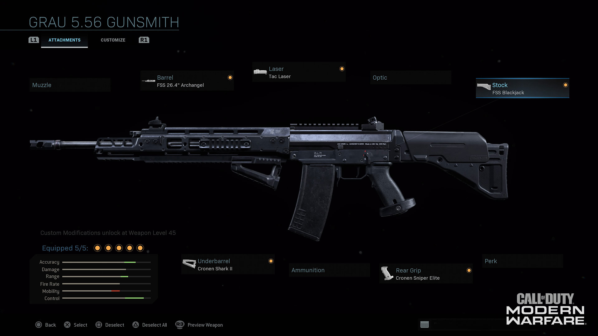
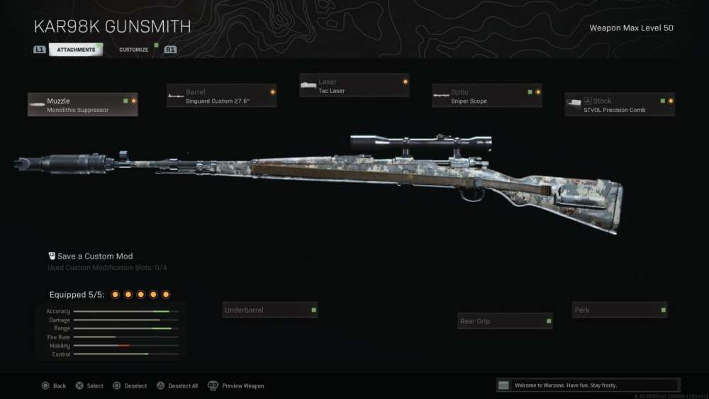
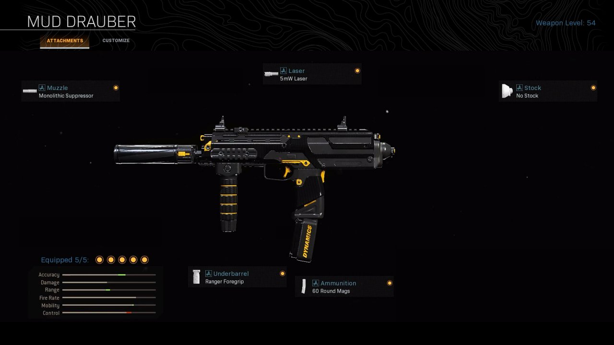
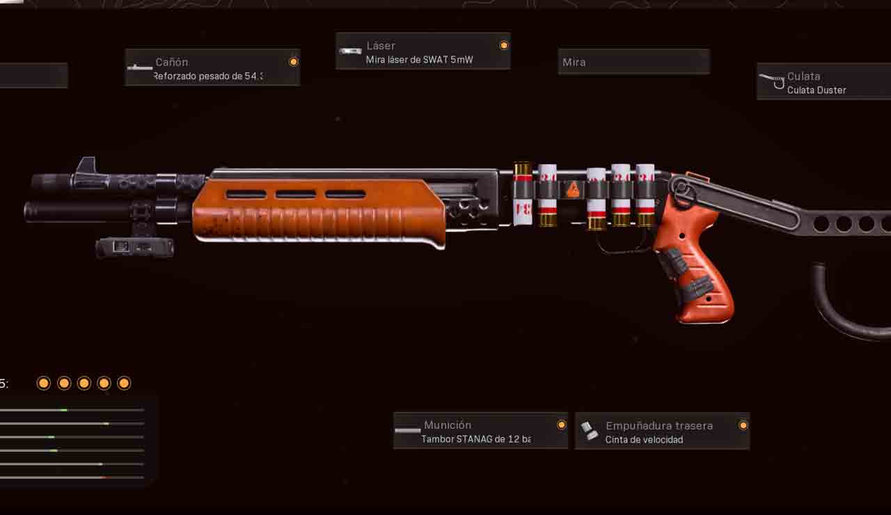
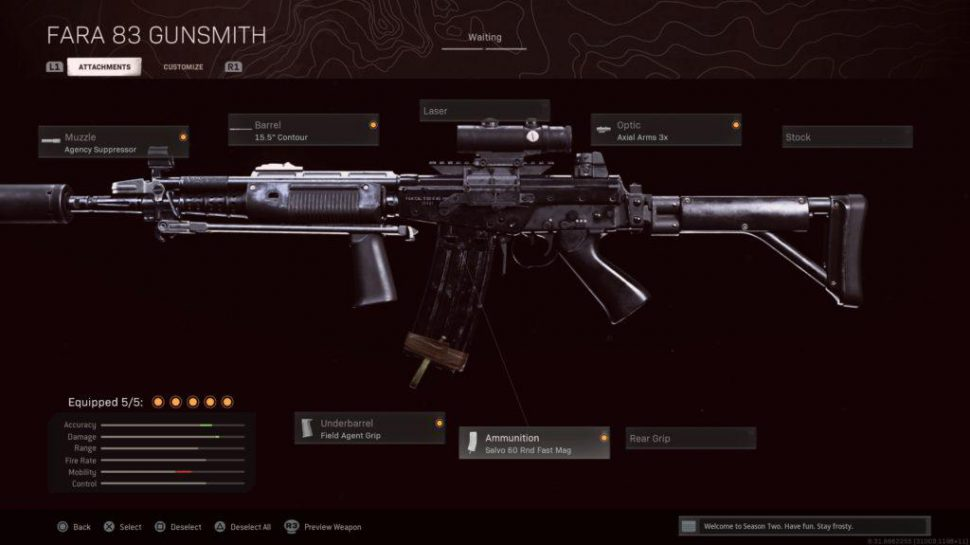

Grau 5.56
El Grau 5.56 es un arma bastante equilibrada dentro de la categoría de los fusiles de asalto. Gracias al armero, sus características se pueden adaptar a los jugadores que prefieren subfusiles potentes y letales a larga distancia. Tal y como indica su nombre, el Grau usa munición de 5,56, similar a la de algunas ametralladoras ligeras, como la Holger-26. Esto significa que es capaz de infligir daños importantes, pero con una cadencia mucho mayor y menor tiempo de apuntado con la mira que cualquier ametralladora ligera.
Kar98k
El Kar98k es cada vez más popular entre los jugadores de Warzone de alta habilidad y no es difícil ver por qué. Con el mismo aterrador potencial de muerte de un solo disparo para jugadores completamente blindados como el HDR, AX-50 y Rytec AMR, pero con estadísticas de manejo mucho mejores que esos rifles de francotirador Warzone.
MP7
La MP7 es un subfusil automático que nos brinda una alta cadencia de fuego junto con un retroceso muy bajo, lo que es ideal para el combate muy cercano en Call of Duty Warzone. De hecho, además de estas dos cualidades, está dotado de un daño excelente y de una precisión bastante adecuada.
Gallo SA12
La escopeta de cartuchos para distancias cortas (gallo) es una de las mejores armas de COD Warzone, y sin duda una escopeta absolutamente letal. Pese al nerfeo que ha sufrido, sigue siendo una opción muy recomendable para los jugadores.
Fara 83
Originalmente denominado FAA 81 (Fusil de Asalto Argentino 1981), el FARA 83 (Fusil de Asalto de la República Argentina 1983) nació por un requerimiento del Ejército Argentino (EA) a la Dirección General de Fabricaciones Militares (DGFM) para reemplazar a los FN FAL calibre 7,62 mm por un fusil de diseño nacional de calibre 5,56 mm, de retroceso más suave y con mayor capacidad del cargador. El prototipo del fusil fue completado en 1981 y su producción comenzó en 1984, siendo producido hasta 1990.